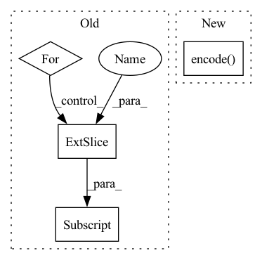

Pattern ID :9951

Before Change
attr_embeddings = []
for attr_idx in range(self.attribute_num):
kth_dim_attr = attr_data[:, attr_idx]
kth_dim_embeddings = self.attr_embedder[attr_idx](kth_dim_attr)
attr_embeddings.append(kth_dim_embeddings)
attr_embeddings = torch.cat(attr_embeddings, dim=1)
After Change
def generate_for_corpus(self, eval_data, corpus):
attr_embeddings, h_c = self.encode(corpus["attribute_idx"])
if self.is_gated:
h_c_1D = torch.relu(self.gate_hc_linear(attr_embeddings))
In pattern: SUPERPATTERN
Frequency: 3
Non-data size: 4
Instances
Fragment ID: 35596957
Project Name: rucaibox/textbox
Commit Name: 09345e6c7a330c9f871f488b9eda539d233ae9a0
Time: 2021-03-08
Author: zhuohaoyu1228@gmail.com
File Name: textbox/model/Attribute/c2s.py
M Class Name: C2S
N Class Name: C2S
M Method Name: generate_for_corpus(3)
N Method Name: generate_for_corpus(3)
M Parent Class: AttributeGenerator
N Parent Class: AttributeGenerator
M File Name: textbox/model/Attribute/c2s.py
N File Name: textbox/model/Attribute/c2s.py
M Start Line: 120
M End Line: 189
N Start Line: 125
N End Line: 125
'>
Before Change
attr_embeddings = []
for attr_idx in range(self.attribute_num):
kth_dim_attr = input_attr[:, attr_idx]
kth_dim_embeddings = self.attr_embedder[attr_idx](kth_dim_attr)
attr_embeddings.append(kth_dim_embeddings)
attr_embeddings = torch.cat(attr_embeddings, dim=1)
After Change
input_attr = corpus["attribute_idx"]
target_text = corpus["target_idx"][:, 1:]
attr_embeddings, h_c = self.encode(input_attr)
h_c = h_c.reshape(-1, self.num_dec_layers, self.hidden_size)
h_c = h_c.permute(1, 0, 2).contiguous()
'>
Fragment ID: 35596956
Project Name: rucaibox/textbox
Commit Name: 09345e6c7a330c9f871f488b9eda539d233ae9a0
Time: 2021-03-08
Author: zhuohaoyu1228@gmail.com
File Name: textbox/model/Attribute/c2s.py
M Class Name: C2S
N Class Name: C2S
M Method Name: calculate_loss(4)
N Method Name: calculate_loss(4)
M Parent Class: AttributeGenerator
N Parent Class: AttributeGenerator
M File Name: textbox/model/Attribute/c2s.py
N File Name: textbox/model/Attribute/c2s.py
M Start Line: 79
M End Line: 91
N Start Line: 93
N End Line: 96
'>
Before Change
def predict(network):
t0_spikes = []
hh_encoder = None
for t in range(n_encoder_steps):
x = t0[:, t]
x, hh_encoder = spikes_encoder(x, hh_encoder)
t0_spikes.append(x)
t0_spikes = torch.stack(t0_spikes, dim=1)
t0_decode = spikes_decoder(t0_spikes)
After Change
// t0_spikes.append(x)
// t0_spikes = torch.stack(t0_spikes, dim=1)
// t0_decode = spikes_decoder(t0_spikes)
t0_spikes = spikes_auto_encoder.encode(t0)
spikes_preds = []
x, hh = None, None
for t in range(n_encoder_steps):
'>
Fragment ID: 35596955
Project Name: neurotorch/neurotorch
Commit Name: 1448822fbe5f5b55b9f4434da75c983e31f11bf8
Time: 2022-08-06
Author: 50332514+JeremieGince@users.noreply.github.com
File Name: applications/time_series_forecasting_spiking/ts_pred_with_lif_autoencoder.py
M Class Name: AnonimousClass
N Class Name: AnonimousClass
M Method Name: predict(1)
N Method Name: predict(1)
M Parent Class:
N Parent Class:
M File Name: applications/time_series_forecasting_spiking/ts_pred_with_lif_autoencoder.py
N File Name: applications/time_series_forecasting_spiking/ts_pred_with_lif_autoencoder.py
M Start Line: 61
M End Line: 84
N Start Line: 72
N End Line: 90